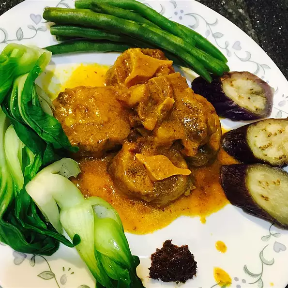

Kare-kare (Filipino Oxtail Stew)
This is one of the traditional foods back in the Philippines, always the best for fiestas and holidays.
Serve over hot cooked rice.
Ingridients
- 1½ pounds beef oxtail, cut into pieces
- 1 large onion, quartered
- 2 cloves garlic, chopped
- 1 teaspoon salt
- ½ teaspoon ground black pepper, or to taste
- 1 large eggplant, cut into 2-inch chunks
- ½ head bok choy, cut into 1-inch pieces
- ½ pound fresh green beans, trimmed and snapped into 2-inch pieces
- ¼ cup peanut butter, or as needed to thicken sauce
Instructions
-
Fill a large saucepan with water, and drop in the oxtail pieces, onion, garlic, salt, and
pepper. Bring to a boil, and simmer for 2 hours over medium-low heat, skimming the
foam occasionally, until the oxtail meat is very tender and the broth is reduced to 3
cups.
-
Stir in the eggplant, bok choy, and green beans, and simmer for about 20 minutes,
until the vegetables are tender.
-
Just before serving, place the peanut butter in a small bowl and thin with 1 or 2
tablespoons of broth. Stir until smooth and add to the stew.